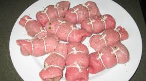
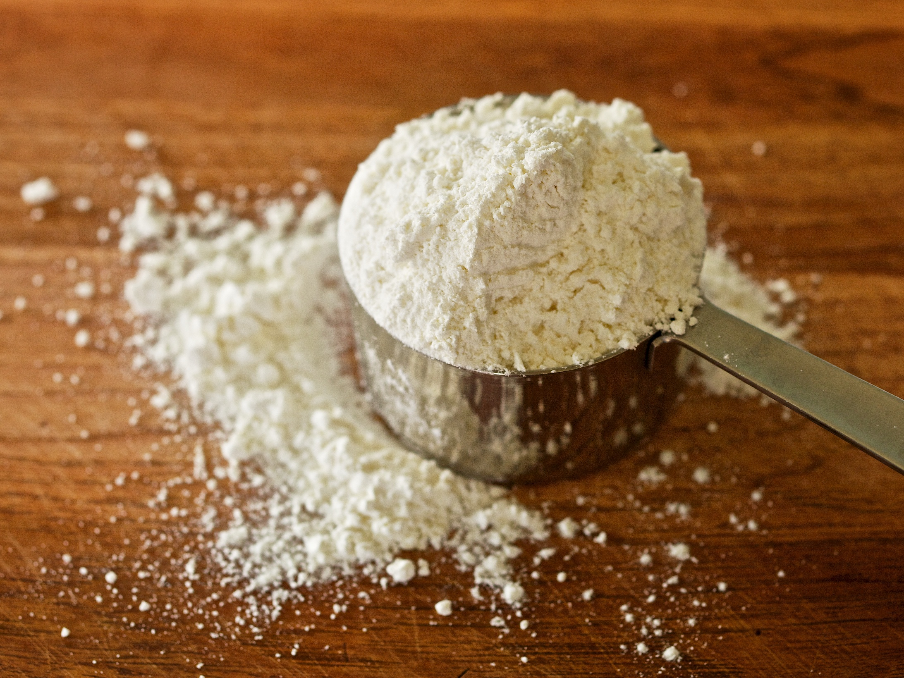

M and M ReciTree
Home
Recipes By Meal
All Recipes
Veal Birds
Coppola


Ingredients:
8 thin veal cutlets
8 slices of prosciutto
2/3 cup grated parmesan cheese
8 anchovy filets
Flour
3 tbsp butter
1 tbsp olive oil
1/4 cup dry white wine
8 pimento-stuffed olives
1 tbsp parsley, chopped
1 tbsp lemon juice
Salt and pepper to taste
Recipe:
Trim cutlets evenly
Place a slice of prosciutto on top of each
Sprinkle with parmesan cheese
Place one filet of anchovy on each
Roll and fasten securely with toothpicks or with thread
Season with salt and pepper
Dredge rolls lightly in flour
Heat butter and oil in skillet
Saute rolls until nicely browned on all sides
Add in wine and lemon juice, cover and cook over medium heat about 15 to 20 minutes
Baste and turn frequently
Five minutes before they are done, add in olives and parsley
Veal Birds History
Growing up, this was Mike's favorite birthday dinner.